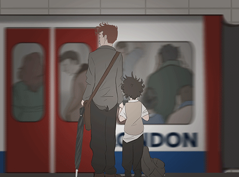
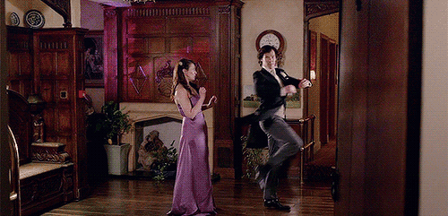
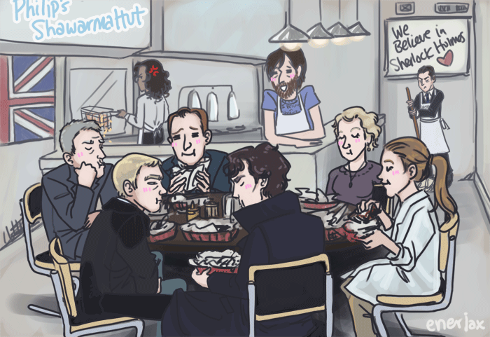
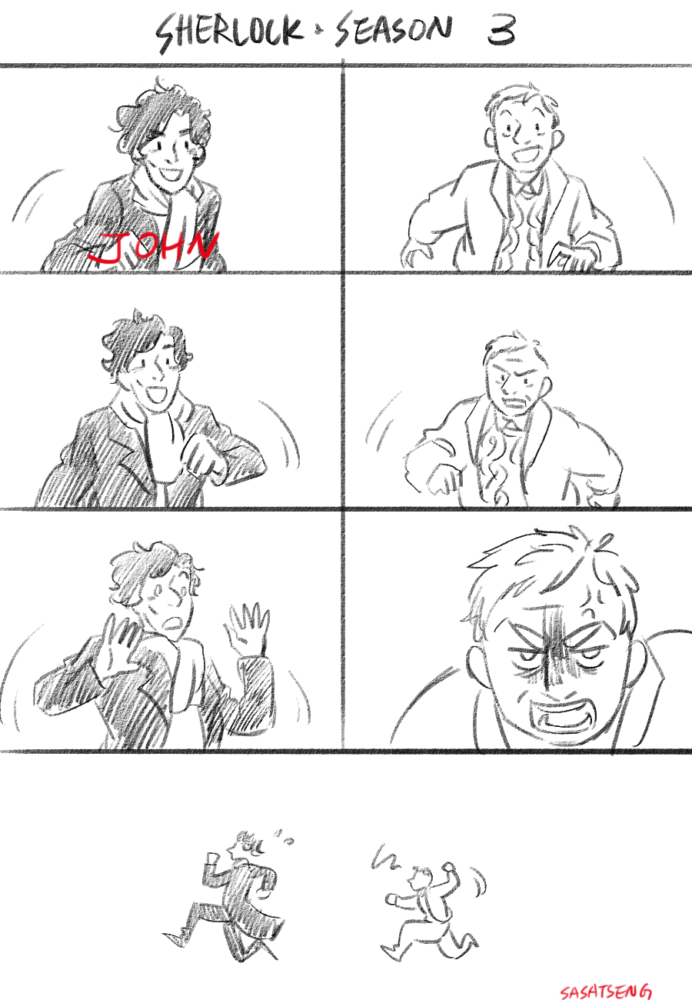

CZASY
Present Simple
Czasu tego używamy, kiedy opisujemy rutynę.
The trains leaves at seven o'clock.

Present Continuous
Czas ten najczęściej opisuje czynność, która jest w tej chwili wykonywana.
I am talking to Mary now so I can't do it.
Present Perfect
W czasie tym nie jest istotne, kiedy czynność została wykonana - ważne są jej skutki w teraźniejszości. Opisuje czynność, która zaczęła się w danym momencie w przeszłości i trwa do dziś lub doświadczenie.
I have lived here for six years.

Present Perfect Continuous
Tego czasu używamy, kiedy opisywana czynność rozpoczęła się w przeszłości, trwała nieprzerwanie i trwa do chwili obecnej lub rozpoczęła się w przeszłości i właśnie się skończyła ale jej skutki są wciąż odczuwalne. Jest to czynność ciągła, niedokonana.
I have been listening to them for four years.
Future Simple
Jest to czas przyszły prosty. Opisuje to, co wydarzy się w przyszłości.
Moriarty will set a trap for us sooner or later.
Future Continuous
W tym czasie wyrażamy czynność, która będzie wykonywana w przyszłości i będzie trwała pewien czas.
Tomorrow at this time he will be lying on the beach.
Future Perfect
Czas ten jest używany do określenia czynności, która skończy się zanim zacznie się następna czynność lub zakończy się przed pewnym określonym czasem (punktem) w przyszłości.
Shelock will not have stopped dancing until the end of the day.

Future Perfect Continuous
Ten czas określa czynność, która najczęściej już trwa, a która zakończy się w określonym momencie w przyszłości. Różnica między Future Perfect Continuous a Future Perfect polega jedynie na tym, że właśnie tę ciągłość chcemy podkreślić, a nie efekty czynności.
I will have been reading my new book for two hours before my friend comes to see me.
Past Simple
Ten czas opisuje wydarzenia, które dokonały się w określonym czasie w przeszłości.
I bought a house last week.
Past Continuous
Ten czas opisuje czynność trwającą, która miała miejsce w przeszłości.
He was washing the dishes when she called.
Past Perfect
Czas ten opisuje czynność, która dokonała się zanim rozpoczęła się inna czynność przeszła. Używamy go przeważnie z czasem Past Simple.
I had eaten lunch before she came.

Past Perfect Continuous
Tego czasu używamy mówiąc o czynności ciągłej w przeszłości która zaczęła się zanim miała miejsce jakaś inna czynność przeszła. Używamy go zazwyczaj z czasem Past Simple.
After I talked with my mom I had been washing the dishes.
BUDOWA
|
SIMPLE |
PERFECT |
| Tense |
"tensed" |
"tensed" have + Past Participle |
| PRESENT |
write/writes walk/walks |
has/have written has/have walked |
| PAST |
wrote walked |
had written had walked |
| FUTURE |
will write will walk |
will have written will have walked |
|
CONTINUOUS |
PERFECT CONT. |
| Tense |
"tensed" be + Present Participle |
"tensed" have + been + Past Participle |
| PRESENT |
am/is/are writing am/is/are walking |
has/have been writing has/have been walking |
| PAST |
was/were writing was/were walking |
had been writing had been walking |
| FUTURE |
will be writing will be walking |
will have been writing will have walking |
